Scalp & Intracranial Potentials Display
If you have no idea how to get this display on the first hand, it will help if you read this topic first.
Buttons


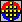 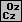
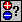
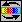
Mouse
Menus
Search
Options
Interpolation
Specify a display scaling
Show / hide color scaling
Show / hide color orientation
'Depth Shifting' trick of 3D potentials
Technical points
How do I get this display?
ROIs and potentials display
Potentials - Buttons
Rendering
(Go here for basic explanations on rendering)
Toggles between 4 display modes:
-
No interpolation, small spheres at each electrode position have a coloring proportional to the intensity:
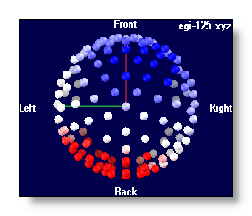
-
Using a Delaunay interpolation, triangles between electrodes have a coloring proportional to the intensity, plus a fixed transparency:
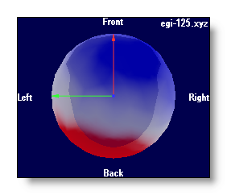
-
Using a Delaunay interpolation, triangles between electrodes have a coloring proportional to the intensity, plus a transparency inversely proportional to the intensity (a bit like clouds on top of the brain...):
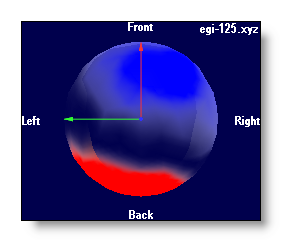
-
Using a Delaunay interpolation, triangles between electrodes have a coloring proportional to the intensity, and are rendered opaque:
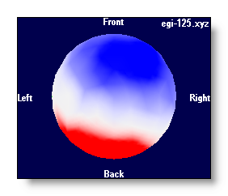
Show electrodes
Show the electrodes positions. It currently toggles between 3 modes:
-
No electrodes,
- Small electrodes,
- Bigger electrodes.
Show electrode names
Show the names of the electrodes, each name within its own semi-transparent window.
Show tracks on top
This is actually a handy shortcut to the EEG window itself, to turn it into the 3D tracks rendering, and then applying a graphical link to see the tracks in 3D superimposed to the potentials. See an example here in 3D and in 2D:
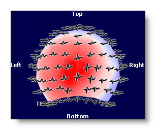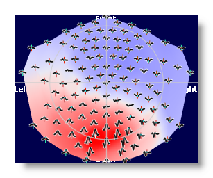
Plus, you can combine the "tracks on top" with ROIs .
Project in 2D
Enables you to see all your data on a flat surface. Mostly, it does a projection of the 3D model . What has been detected as "the top" is used as the center of the projection, and everything un-warps from there (I'm still searching for the name of that projection).
It currently toggles between 3 modes:
-
Regular, 3D mode,
- Plain 2D,
- 2D plus elevation proportional to intensity and contrast.
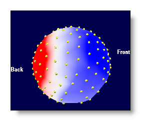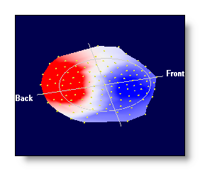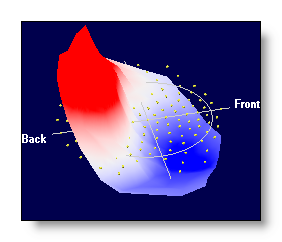
If the electrode model includes more than surface electrodes, that is single electrodes, strips, grids , they will also be rendered in 2D in a synthetic and ordered way . Still the idea is to give the user an idea of what the data are, avoiding anything to be hidden by another object. F.ex. a few strips in 3D and then in 2D:
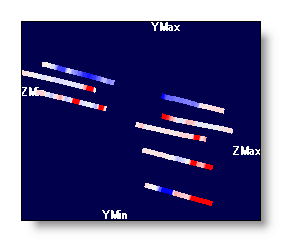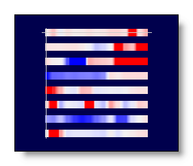
Show Min and Max positions
Add a 3D cross where the minimum and maximum values are. It's also a 3 states buttons, with two different sizes for the cross availables:
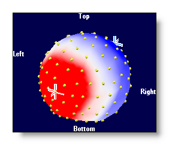
Brightness
See the MRI Brightness.
Contrast
See the MRI Contrast.
Color auto scaling
See the MRI Color auto scaling.
Color modes
4 different color modes are possible, for negative / 0 / positive values:
-
Blue / White / Red
- Neuroscan-ish colors
- Black / White / Black
- White / Middle grey / Black
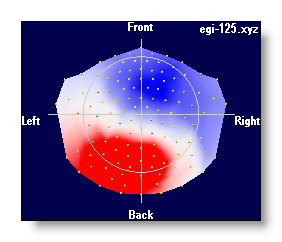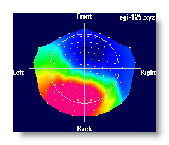
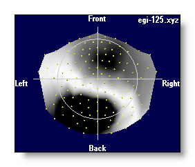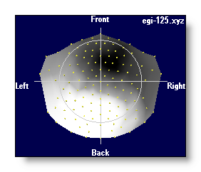
Switch to another electrode coordinates file
The link file can contain more than one electrode coordinates file . In this case, you can use any of these models to show your data. F.ex. you can have a standard (and smooth) model, plus the actual model (less smooth) of a given subject, and switch from one to another. F.ex.:
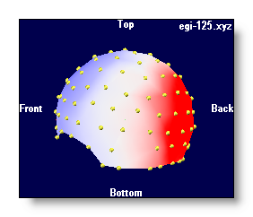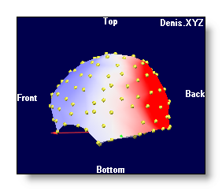
Potentials - Mouse
See the general mouse actions, and especially the brightness and contrast control and the polling function .
Potentials - Menus
Search menu
Find TF with maximum value
Scan all Time Frames, and set the time cursor to the position where the greatest GFP is.
Options menu
Interpolation
Obsolete stuff. Cancels or enables the triangulation, equivalent to this mode .
Specify a display scaling
Ask the user for an arbitrary scaling value, equivalent to setting the brightness.
Show / hide color scaling
Does what it says.
Show / hide projected axis and equator
In 2D mode, this toggles on and off the display of the projected equator and axis.
Show / hide orientation
Does what it says.
'Depth shifting' trick for 3D potentials
If you apply some graphical links, the data are 3D consistents. That is, anything closer to the viewer will hide what is behind, as we get used to. In some cases, f.ex. depth electrodes, we wish to see their display even though they are hidden in the brain. So we can artificially shift the potentials closer to the viewer, and see them "on top" of the brain.
Same as the MRI Depth Shifting topic .
F.ex. depth electrodes wihtout and with depth shifting:
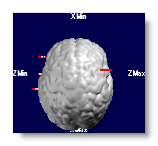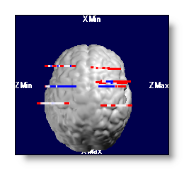
Potentials - Technical points
How do I get this display?
This display is actually automatically generated when enough files have been linked together, and therefore share enough informations together.
So, simply put at least these kind of files:
-
1 (or more) EEG file(s) (preferably an ERP file),
-
At least one electrode coordinates file .
Putting many EEG files will display as many maps as there are of EEGs, but putting many coordinates files does not. This last case allows you to switch in real-time between different 3D models, f.ex. between a real model from a subject, and an average one. All the maps of the link being changed at once.
Important points:
-
Putting many EEG files will display as many maps as there are of files.
-
You can put many coordinates files, but only one is active at a time.
-
You have to sure the sequence of the electrodes in the coordinates file exactly match the sequence of the tracks in the EEG files . Missing this point leads to totally erroneous results and displays!
-
Cartool is doing a lot of checkings to ensure you are on the safe side of this elaborate display. Though, only you can assert that all these files match together (the solution points with the MRI space and the IS matrix).
Recommended readings: the fabulous Linking Files story, as well as the infamous " windows in slavery ".
ROIs and potentials display
Well, there is no direct control / button for ROIs in the potential display. This is done through the usual ones, and from the EEG tracks ROI controls .
So, if the EEG display is in ROIs mode, showing the tracks on top will show the tracks grouped by roi , with the underlying map unchanged:
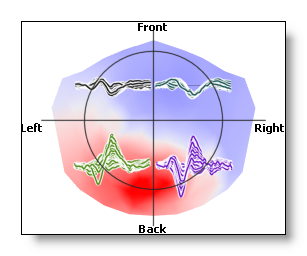
Now, if the rois are averaged, then the averaged tracks are shown, and the underlying map shows the averaged values , too (the electrodes not within a roi are set to zero):
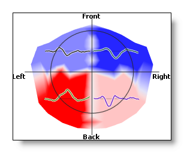